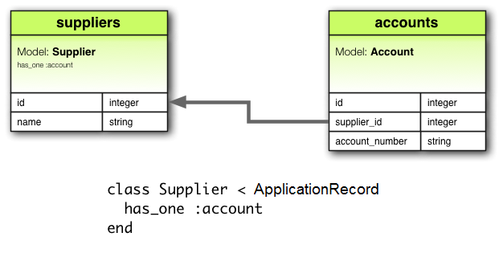
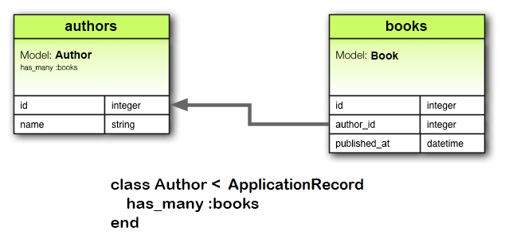
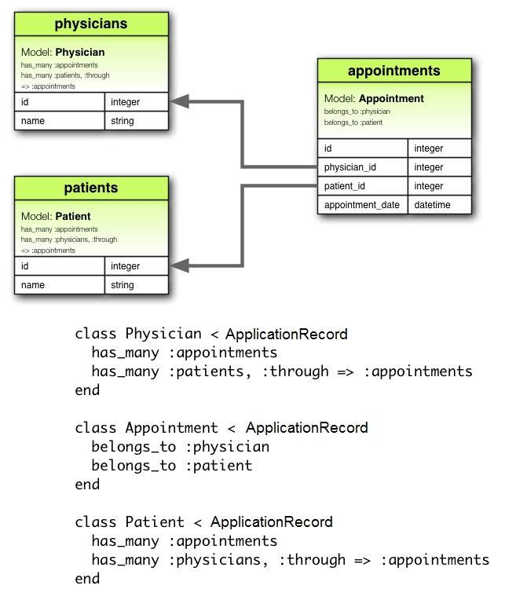
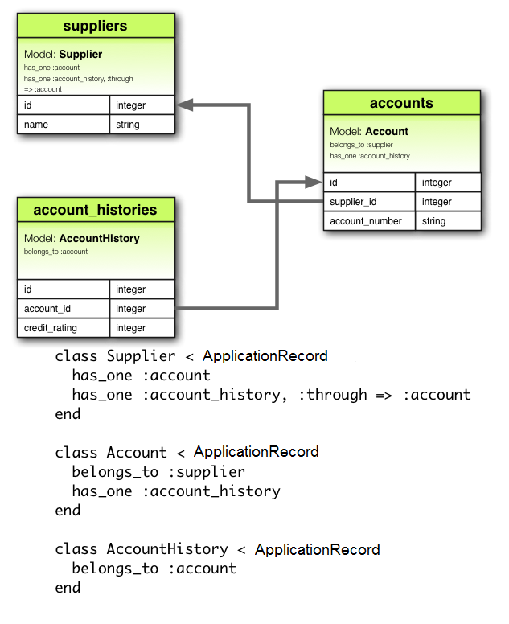

1 Why Associations?
In Rails, an association is a connection between two Active Record models. Why do we need associations between models? Because they make common operations simpler and easier in your code.
For example, consider a simple Rails application that includes a model for authors and a model for books. Each author can have many books.
Without associations, the model declarations would look like this:
class Author < ApplicationRecord
end
class Book < ApplicationRecord
end
Now, suppose we wanted to add a new book for an existing author. We'd need to do something like this:
@book = Book.create(published_at: Time.now, author_id: @author.id)
Or consider deleting an author, and ensuring that all of its books get deleted as well:
@books = Book.where(author_id: @author.id)
@books.each do |book|
book.destroy
end
@author.destroy
With Active Record associations, we can streamline these - and other - operations by declaratively telling Rails that there is a connection between the two models. Here's the revised code for setting up authors and books:
class Author < ApplicationRecord
has_many :books, dependent: :destroy
end
class Book < ApplicationRecord
belongs_to :author
end
With this change, creating a new book for a particular author is easier:
@book = @author.books.create(published_at: Time.now)
Deleting an author and all of its books is much easier:
@author.destroy
To learn more about the different types of associations, read the next section of this guide. That's followed by some tips and tricks for working with associations, and then by a complete reference to the methods and options for associations in Rails.
2 The Types of Associations
Rails supports six types of associations, each with a particular use-case in mind.
Here is a list of all of the supported types with a link to their API docs for more detailed information on how to use them, their method parameters, etc.
Associations are implemented using macro-style calls, so that you can declaratively add features to your models. For example, by declaring that one model belongs_to another, you instruct Rails to maintain Primary Key-Foreign Key information between instances of the two models, and you also get a number of utility methods added to your model.
In the remainder of this guide, you'll learn how to declare and use the various forms of associations. But first, a quick introduction to the situations where each association type is appropriate.
2.1 The belongs_to Association
A belongs_to association sets up a connection with another model, such that each instance of the declaring model "belongs to" one instance of the other model. For example, if your application includes authors and books, and each book can be assigned to exactly one author, you'd declare the book model this way:
class Book < ApplicationRecord
belongs_to :author
end

belongs_to associations must use the singular term. If you used the pluralized form in the above example for the author association in the Book model and tried to create the instance by Book.create(authors: @author), you would be told that there was an "uninitialized constant Book::Authors". This is because Rails automatically infers the class name from the association name. If the association name is wrongly pluralized, then the inferred class will be wrongly pluralized too.
The corresponding migration might look like this:
class CreateBooks < ActiveRecord::Migration[7.2]
def change
create_table :authors do |t|
t.string :name
t.timestamps
end
create_table :books do |t|
t.belongs_to :author
t.datetime :published_at
t.timestamps
end
end
end
When used alone, belongs_to produces a one-directional one-to-one connection. Therefore each book in the above example "knows" its author, but the authors don't know about their books.
To setup a bi-directional association - use belongs_to in combination with a has_one or has_many on the other model, in this case the Author model.
belongs_to does not ensure reference consistency if optional is set to true, so depending on the use case, you might also need to add a database-level foreign key constraint on the reference column, like this:
create_table :books do |t|
t.belongs_to :author, foreign_key: true
# ...
end
2.2 The has_one Association
A has_one association indicates that one other model has a reference to this model. That model can be fetched through this association.
For example, if each supplier in your application has only one account, you'd declare the supplier model like this:
class Supplier < ApplicationRecord
has_one :account
end
The main difference from belongs_to is that the link column supplier_id is located in the other table:

The corresponding migration might look like this:
class CreateSuppliers < ActiveRecord::Migration[7.2]
def change
create_table :suppliers do |t|
t.string :name
t.timestamps
end
create_table :accounts do |t|
t.belongs_to :supplier
t.string :account_number
t.timestamps
end
end
end
Depending on the use case, you might also need to create a unique index and/or a foreign key constraint on the supplier column for the accounts table. In this case, the column definition might look like this:
create_table :accounts do |t|
t.belongs_to :supplier, index: { unique: true }, foreign_key: true
# ...
end
This relation can be bi-directional when used in combination with belongs_to on the other model.
2.3 The has_many Association
A has_many association is similar to has_one, but indicates a one-to-many connection with another model. You'll often find this association on the "other side" of a belongs_to association. This association indicates that each instance of the model has zero or more instances of another model. For example, in an application containing authors and books, the author model could be declared like this:
class Author < ApplicationRecord
has_many :books
end
The name of the other model is pluralized when declaring a has_many association.

The corresponding migration might look like this:
class CreateAuthors < ActiveRecord::Migration[7.2]
def change
create_table :authors do |t|
t.string :name
t.timestamps
end
create_table :books do |t|
t.belongs_to :author
t.datetime :published_at
t.timestamps
end
end
end
Depending on the use case, it's usually a good idea to create a non-unique index and optionally a foreign key constraint on the author column for the books table:
create_table :books do |t|
t.belongs_to :author, index: true, foreign_key: true
# ...
end
2.4 The has_many :through Association
A has_many :through association is often used to set up a many-to-many connection with another model. This association indicates that the declaring model can be matched with zero or more instances of another model by proceeding through a third model. For example, consider a medical practice where patients make appointments to see physicians. The relevant association declarations could look like this:
class Physician < ApplicationRecord
has_many :appointments
has_many :patients, through: :appointments
end
class Appointment < ApplicationRecord
belongs_to :physician
belongs_to :patient
end
class Patient < ApplicationRecord
has_many :appointments
has_many :physicians, through: :appointments
end

The corresponding migration might look like this:
class CreateAppointments < ActiveRecord::Migration[7.2]
def change
create_table :physicians do |t|
t.string :name
t.timestamps
end
create_table :patients do |t|
t.string :name
t.timestamps
end
create_table :appointments do |t|
t.belongs_to :physician
t.belongs_to :patient
t.datetime :appointment_date
t.timestamps
end
end
end
The collection of join models can be managed via the has_many association methods.
For example, if you assign:
physician.patients = patients
Then new join models are automatically created for the newly associated objects. If some that existed previously are now missing, then their join rows are automatically deleted.
Automatic deletion of join models is direct, no destroy callbacks are triggered.
The has_many :through association is also useful for setting up "shortcuts" through nested has_many associations. For example, if a document has many sections, and a section has many paragraphs, you may sometimes want to get a simple collection of all paragraphs in the document. You could set that up this way:
class Document < ApplicationRecord
has_many :sections
has_many :paragraphs, through: :sections
end
class Section < ApplicationRecord
belongs_to :document
has_many :paragraphs
end
class Paragraph < ApplicationRecord
belongs_to :section
end
With through: :sections specified, Rails will now understand:
@document.paragraphs
2.5 The has_one :through Association
A has_one :through association sets up a one-to-one connection with another model. This association indicates
that the declaring model can be matched with one instance of another model by proceeding through a third model.
For example, if each supplier has one account, and each account is associated with one account history, then the
supplier model could look like this:
class Supplier < ApplicationRecord
has_one :account
has_one :account_history, through: :account
end
class Account < ApplicationRecord
belongs_to :supplier
has_one :account_history
end
class AccountHistory < ApplicationRecord
belongs_to :account
end

The corresponding migration might look like this:
class CreateAccountHistories < ActiveRecord::Migration[7.2]
def change
create_table :suppliers do |t|
t.string :name
t.timestamps
end
create_table :accounts do |t|
t.belongs_to :supplier
t.string :account_number
t.timestamps
end
create_table :account_histories do |t|
t.belongs_to :account
t.integer :credit_rating
t.timestamps
end
end
end
2.6 The has_and_belongs_to_many Association
A has_and_belongs_to_many association creates a direct many-to-many connection with another model, with no intervening model.
This association indicates that each instance of the declaring model refers to zero or more instances of another model.
For example, if your application includes assemblies and parts, with each assembly having many parts and each part appearing in many assemblies, you could declare the models this way:
class Assembly < ApplicationRecord
has_and_belongs_to_many :parts
end
class Part < ApplicationRecord
has_and_belongs_to_many :assemblies
end

The corresponding migration might look like this:
class CreateAssembliesAndParts < ActiveRecord::Migration[7.2]
def change
create_table :assemblies do |t|
t.string :name
t.timestamps
end
create_table :parts do |t|
t.string :part_number
t.timestamps
end
create_table :assemblies_parts, id: false do |t|
t.belongs_to :assembly
t.belongs_to :part
end
end
end
2.7 Choosing Between belongs_to and has_one
If you want to set up a one-to-one relationship between two models, you'll need to add belongs_to to one, and has_one to the other. How do you know which is which?
The distinction is in where you place the foreign key (it goes on the table for the class declaring the belongs_to association), but you should give some thought to the actual meaning of the data as well. The has_one relationship says that one of something is yours - that is, that something points back to you. For example, it makes more sense to say that a supplier owns an account than that an account owns a supplier. This suggests that the correct relationships are like this:
class Supplier < ApplicationRecord
has_one :account
end
class Account < ApplicationRecord
belongs_to :supplier
end
The corresponding migration might look like this:
class CreateSuppliers < ActiveRecord::Migration[7.2]
def change
create_table :suppliers do |t|
t.string :name
t.timestamps
end
create_table :accounts do |t|
t.bigint :supplier_id
t.string :account_number
t.timestamps
end
add_index :accounts, :supplier_id
end
end
Using t.bigint :supplier_id makes the foreign key naming obvious and explicit. In current versions of Rails, you can abstract away this implementation detail by using t.references :supplier instead.
2.8 Choosing Between has_many :through and has_and_belongs_to_many
Rails offers two different ways to declare a many-to-many relationship between models. The first way is to use has_and_belongs_to_many, which allows you to make the association directly:
class Assembly < ApplicationRecord
has_and_belongs_to_many :parts
end
class Part < ApplicationRecord
has_and_belongs_to_many :assemblies
end
The second way to declare a many-to-many relationship is to use has_many :through. This makes the association indirectly, through a join model:
class Assembly < ApplicationRecord
has_many :manifests
has_many :parts, through: :manifests
end
class Manifest < ApplicationRecord
belongs_to :assembly
belongs_to :part
end
class Part < ApplicationRecord
has_many :manifests
has_many :assemblies, through: :manifests
end
The simplest rule of thumb is that you should set up a has_many :through relationship if you need to work with the relationship model as an independent entity. If you don't need to do anything with the relationship model, it may be simpler to set up a has_and_belongs_to_many relationship (though you'll need to remember to create the joining table in the database).
You should use has_many :through if you need validations, callbacks, or extra attributes on the join model.
While has_and_belongs_to_many suggests creating a join table with no primary key via id: false, consider using a composite primary key for the join table in the has_many :through relationship.
For example, it's recommended to use create_table :manifests, primary_key: [:assembly_id, :part_id] in the example above.
2.9 Polymorphic Associations
A slightly more advanced twist on associations is the polymorphic association. With polymorphic associations, a model can belong to more than one other model, on a single association. For example, you might have a picture model that belongs to either an employee model or a product model. Here's how this could be declared:
class Picture < ApplicationRecord
belongs_to :imageable, polymorphic: true
end
class Employee < ApplicationRecord
has_many :pictures, as: :imageable
end
class Product < ApplicationRecord
has_many :pictures, as: :imageable
end
You can think of a polymorphic belongs_to declaration as setting up an interface that any other model can use. From an instance of the Employee model, you can retrieve a collection of pictures: @employee.pictures.
Similarly, you can retrieve @product.pictures.
If you have an instance of the Picture model, you can get to its parent via @picture.imageable. To make this work, you need to declare both a foreign key column and a type column in the model that declares the polymorphic interface:
class CreatePictures < ActiveRecord::Migration[7.2]
def change
create_table :pictures do |t|
t.string :name
t.bigint :imageable_id
t.string :imageable_type
t.timestamps
end
add_index :pictures, [:imageable_type, :imageable_id]
end
end
This migration can be simplified by using the t.references form:
class CreatePictures < ActiveRecord::Migration[7.2]
def change
create_table :pictures do |t|
t.string :name
t.references :imageable, polymorphic: true
t.timestamps
end
end
end
Since polymorphic associations rely on storing class names in the database, that data must remain synchronized with the class name used by the Ruby code. When renaming a class, make sure to update the data in the polymorphic type column.

2.10 Associations between Models with Composite Primary Keys
Rails is often able to infer the primary key - foreign key information between associated models with composite primary keys without needing extra information. Take the following example:
class Order < ApplicationRecord
self.primary_key = [:shop_id, :id]
has_many :books
end
class Book < ApplicationRecord
belongs_to :order
end
Here, Rails assumes that the :id column should be used as the primary key for the association between an order
and its books, just as with a regular has_many / belongs_to association. It will infer that the foreign key column
on the books table is :order_id. Accessing a book's order:
order = Order.create!(id: [1, 2], status: "pending")
book = order.books.create!(title: "A Cool Book")
book.reload.order
will generate the following SQL to access the order:
SELECT * FROM orders WHERE id = 2
This only works if the model's composite primary key contains the :id column, and the column is unique for
all records. In order to use the full composite primary key in associations, set the query_constraints option on
the association. This option specifies a composite foreign key on the association: all columns in the foreign key will
be used when querying the associated record(s). For example:
class Author < ApplicationRecord
self.primary_key = [:first_name, :last_name]
has_many :books, query_constraints: [:first_name, :last_name]
end
class Book < ApplicationRecord
belongs_to :author, query_constraints: [:author_first_name, :author_last_name]
end
Accessing a book's author:
author = Author.create!(first_name: "Jane", last_name: "Doe")
book = author.books.create!(title: "A Cool Book")
book.reload.author
will use :first_name and :last_name in the SQL query:
SELECT * FROM authors WHERE first_name = 'Jane' AND last_name = 'Doe'
2.11 Self Joins
In designing a data model, you will sometimes find a model that should have a relation to itself. For example, you may want to store all employees in a single database model, but be able to trace relationships such as between manager and subordinates. This situation can be modeled with self-joining associations:
class Employee < ApplicationRecord
has_many :subordinates, class_name: "Employee",
foreign_key: "manager_id"
belongs_to :manager, class_name: "Employee", optional: true
end
With this setup, you can retrieve @employee.subordinates and @employee.manager.
In your migrations/schema, you will add a references column to the model itself.
class CreateEmployees < ActiveRecord::Migration[7.2]
def change
create_table :employees do |t|
t.references :manager, foreign_key: { to_table: :employees }
t.timestamps
end
end
end
The to_table option passed to foreign_key and more are explained in SchemaStatements#add_reference.
3 Tips, Tricks, and Warnings
Here are a few things you should know to make efficient use of Active Record associations in your Rails applications:
- Controlling caching
- Avoiding name collisions
- Updating the schema
- Controlling association scope
- Bi-directional associations
3.1 Controlling Caching
All of the association methods are built around caching, which keeps the result of the most recent query available for further operations. The cache is even shared across methods. For example:
# retrieves books from the database
author.books.load
# uses the cached copy of books
author.books.size
# uses the cached copy of books
author.books.empty?
But what if you want to reload the cache, because data might have been changed by some other part of the application? Just call reload on the association:
# retrieves books from the database
author.books.load
# uses the cached copy of books
author.books.size
# discards the cached copy of books and goes back to the database
author.books.reload.empty?
3.2 Avoiding Name Collisions
You are not free to use just any name for your associations. Because creating an association adds a method with that name to the model, it is a bad idea to give an association a name that is already used for an instance method of ActiveRecord::Base. The association method would override the base method and break things. For instance, attributes or connection are bad names for associations.
3.3 Updating the Schema
Associations are extremely useful, but they are not magic. You are responsible for maintaining your database schema to match your associations. In practice, this means two things, depending on what sort of associations you are creating. For belongs_to associations you need to create foreign keys, and for has_and_belongs_to_many associations you need to create the appropriate join table.
3.3.1 Creating Foreign Keys for belongs_to Associations
When you declare a belongs_to association, you need to create foreign keys as appropriate. For example, consider this model:
class Book < ApplicationRecord
belongs_to :author
end
This declaration needs to be backed up by a corresponding foreign key column in the books table. For a brand new table, the migration might look something like this:
class CreateBooks < ActiveRecord::Migration[7.2]
def change
create_table :books do |t|
t.datetime :published_at
t.string :book_number
t.references :author
end
end
end
Whereas for an existing table, it might look like this:
class AddAuthorToBooks < ActiveRecord::Migration[7.2]
def change
add_reference :books, :author
end
end
If you wish to enforce referential integrity at the database level, add the foreign_key: true option to the ‘reference’ column declarations above.
3.3.2 Creating Join Tables for has_and_belongs_to_many Associations
If you create a has_and_belongs_to_many association, you need to explicitly create the joining table. Unless the name of the join table is explicitly specified by using the :join_table option, Active Record creates the name by using the lexical order of the class names. So a join between author and book models will give the default join table name of "authors_books" because "a" outranks "b" in lexical ordering.
The precedence between model names is calculated using the <=> operator for String. This means that if the strings are of different lengths, and the strings are equal when compared up to the shortest length, then the longer string is considered of higher lexical precedence than the shorter one. For example, one would expect the tables "paper_boxes" and "papers" to generate a join table name of "papers_paper_boxes" because of the length of the name "paper_boxes", but it in fact generates a join table name of "paper_boxes_papers" (because the underscore '_' is lexicographically less than 's' in common encodings).
Whatever the name, you must manually generate the join table with an appropriate migration. For example, consider these associations:
class Assembly < ApplicationRecord
has_and_belongs_to_many :parts
end
class Part < ApplicationRecord
has_and_belongs_to_many :assemblies
end
These need to be backed up by a migration to create the assemblies_parts table. This table should be created without a primary key:
class CreateAssembliesPartsJoinTable < ActiveRecord::Migration[7.2]
def change
create_table :assemblies_parts, id: false do |t|
t.bigint :assembly_id
t.bigint :part_id
end
add_index :assemblies_parts, :assembly_id
add_index :assemblies_parts, :part_id
end
end
We pass id: false to create_table because that table does not represent a model. That's required for the association to work properly. If you observe any strange behavior in a has_and_belongs_to_many association like mangled model IDs, or exceptions about conflicting IDs, chances are you forgot that bit.
For simplicity, you can also use the method create_join_table:
class CreateAssembliesPartsJoinTable < ActiveRecord::Migration[7.2]
def change
create_join_table :assemblies, :parts do |t|
t.index :assembly_id
t.index :part_id
end
end
end
3.4 Controlling Association Scope
By default, associations look for objects only within the current module's scope. This can be important when you declare Active Record models within a module. For example:
module MyApplication
module Business
class Supplier < ApplicationRecord
has_one :account
end
class Account < ApplicationRecord
belongs_to :supplier
end
end
end
This will work fine, because both the Supplier and the Account class are defined within the same scope (MyApplication::Business). This organization allows structuring models into folders based on their scope, without having to explicitly add the scope to every association:
# app/models/my_application/business/supplier.rb
module MyApplication
module Business
class Supplier < ApplicationRecord
has_one :account
end
end
end
# app/models/my_application/business/account.rb
module MyApplication
module Business
class Account < ApplicationRecord
belongs_to :supplier
end
end
end
It is crucial to note that this does not affect the naming of your tables. For instance, if there is a MyApplication::Business::Supplier model, there must also be a my_application_business_suppliers table.
Note that the following will not work, because Supplier and Account are defined in different scopes (MyApplication::Business and MyApplication::Billing):
module MyApplication
module Business
class Supplier < ApplicationRecord
has_one :account
end
end
module Billing
class Account < ApplicationRecord
belongs_to :supplier
end
end
end
To associate a model with a model in a different namespace, you must specify the complete class name in your association declaration:
module MyApplication
module Business
class Supplier < ApplicationRecord
has_one :account,
class_name: "MyApplication::Billing::Account"
end
end
module Billing
class Account < ApplicationRecord
belongs_to :supplier,
class_name: "MyApplication::Business::Supplier"
end
end
end
3.5 Bi-directional Associations
It's normal for associations to work in two directions, requiring declaration on two different models:
class Author < ApplicationRecord
has_many :books
end
class Book < ApplicationRecord
belongs_to :author
end
Active Record will attempt to automatically identify that these two models share a bi-directional association based on the association name. This information allows Active Record to:
Prevent needless queries for already-loaded data:
irb> author = Author.first irb> author.books.all? do |book| irb> book.author.equal?(author) # No additional queries executed here irb> end => truePrevent inconsistent data (since there is only one copy of the
Authorobject loaded):irb> author = Author.first irb> book = author.books.first irb> author.name == book.author.name => true irb> author.name = "Changed Name" irb> author.name == book.author.name => trueAutosave associations in more cases:
irb> author = Author.new irb> book = author.books.new irb> book.save! irb> book.persisted? => true irb> author.persisted? => trueValidate the presence and absence of associations in more cases:
irb> book = Book.new irb> book.valid? => false irb> book.errors.full_messages => ["Author must exist"] irb> author = Author.new irb> book = author.books.new irb> book.valid? => true
Active Record supports automatic identification for most associations with standard names. However, bi-directional associations that contain the :through or :foreign_key options will not be automatically identified.
Custom scopes on the opposite association also prevent automatic identification, as do custom scopes on the association itself unless config.active_record.automatic_scope_inversing is set to true (the default for new applications).
For example, consider the following model declarations:
class Author < ApplicationRecord
has_many :books
end
class Book < ApplicationRecord
belongs_to :writer, class_name: 'Author', foreign_key: 'author_id'
end
Because of the :foreign_key option, Active Record will no longer automatically
recognize the bi-directional association. This can cause your application to:
Execute needless queries for the same data (in this example causing N+1 queries):
irb> author = Author.first irb> author.books.any? do |book| irb> book.author.equal?(author) # This executes an author query for every book irb> end => falseReference multiple copies of a model with inconsistent data:
irb> author = Author.first irb> book = author.books.first irb> author.name == book.author.name => true irb> author.name = "Changed Name" irb> author.name == book.author.name => falseFail to autosave associations:
irb> author = Author.new irb> book = author.books.new irb> book.save! irb> book.persisted? => true irb> author.persisted? => falseFail to validate presence or absence:
irb> author = Author.new irb> book = author.books.new irb> book.valid? => false irb> book.errors.full_messages => ["Author must exist"]
Active Record provides the :inverse_of option so you can explicitly declare bi-directional associations:
class Author < ApplicationRecord
has_many :books, inverse_of: 'writer'
end
class Book < ApplicationRecord
belongs_to :writer, class_name: 'Author', foreign_key: 'author_id'
end
By including the :inverse_of option in the has_many association declaration,
Active Record will now recognize the bi-directional association and behave as in
the initial examples above.
4 Detailed Association Reference
The following sections give the details of each type of association, including the methods that they add and the options that you can use when declaring an association.
4.1 belongs_to Association Reference
In database terms, the belongs_to association says that this model's table contains a column which represents a reference to another table.
This can be used to set up one-to-one or one-to-many relations, depending on the setup.
If the table of the other class contains the reference in a one-to-one relation, then you should use has_one instead.
4.1.1 Methods Added by belongs_to
When you declare a belongs_to association, the declaring class automatically gains 8 methods related to the association:
associationassociation=(associate)build_association(attributes = {})create_association(attributes = {})create_association!(attributes = {})reload_associationreset_associationassociation_changed?association_previously_changed?
In all of these methods, association is replaced with the symbol passed as the first argument to belongs_to. For example, given the declaration:
class Book < ApplicationRecord
belongs_to :author
end
Each instance of the Book model will have these methods:
authorauthor=build_authorcreate_authorcreate_author!reload_authorreset_authorauthor_changed?author_previously_changed?
When initializing a new has_one or belongs_to association you must use the build_ prefix to build the association, rather than the association.build method that would be used for has_many or has_and_belongs_to_many associations. To create one, use the create_ prefix.
4.1.1.1 association
The association method returns the associated object, if any. If no associated object is found, it returns nil.
@author = @book.author
If the associated object has already been retrieved from the database for this object, the cached version will be returned. To override this behavior (and force a database read), call #reload_association on the parent object.
@author = @book.reload_author
To unload the cached version of the associated object—causing the next access, if any, to query it from the database—call #reset_association on the parent object.
@book.reset_author
4.1.1.2 association=(associate)
The association= method assigns an associated object to this object. Behind the scenes, this means extracting the primary key from the associated object and setting this object's foreign key to the same value.
@book.author = @author
4.1.1.3 build_association(attributes = {})
The build_association method returns a new object of the associated type. This object will be instantiated from the passed attributes, and the link through this object's foreign key will be set, but the associated object will not yet be saved.
@author = @book.build_author(author_number: 123,
author_name: "John Doe")
4.1.1.4 create_association(attributes = {})
The create_association method returns a new object of the associated type. This object will be instantiated from the passed attributes, the link through this object's foreign key will be set, and, once it passes all of the validations specified on the associated model, the associated object will be saved.
@author = @book.create_author(author_number: 123,
author_name: "John Doe")
4.1.1.5 create_association!(attributes = {})
Does the same as create_association above, but raises ActiveRecord::RecordInvalid if the record is invalid.
4.1.1.6 association_changed?
The association_changed? method returns true if a new associated object has been assigned and the foreign key will be updated in the next save.
@book.author # => #<Author author_number: 123, author_name: "John Doe">
@book.author_changed? # => false
@book.author = Author.second # => #<Author author_number: 456, author_name: "Jane Smith">
@book.author_changed? # => true
@book.save!
@book.author_changed? # => false
4.1.1.7 association_previously_changed?
The association_previously_changed? method returns true if the previous save updated the association to reference a new associate object.
@book.author # => #<Author author_number: 123, author_name: "John Doe">
@book.author_previously_changed? # => false
@book.author = Author.second # => #<Author author_number: 456, author_name: "Jane Smith">
@book.save!
@book.author_previously_changed? # => true
4.1.2 Options for belongs_to
While Rails uses intelligent defaults that will work well in most situations, there may be times when you want to customize the behavior of the belongs_to association reference. Such customizations can easily be accomplished by passing options and scope blocks when you create the association. For example, this association uses two such options:
class Book < ApplicationRecord
belongs_to :author, touch: :books_updated_at,
counter_cache: true
end
The belongs_to association supports these options:
:autosave:class_name:counter_cache:default:dependent:ensuring_owner_was:foreign_key:foreign_type:primary_key:inverse_of:optional:polymorphic:required:strict_loading:touch:validate
4.1.2.1 :autosave
If you set the :autosave option to true, Rails will save any loaded association members and destroy members that are marked for destruction whenever you save the parent object. Setting :autosave to false is not the same as not setting the :autosave option. If the :autosave option is not present, then new associated objects will be saved, but updated associated objects will not be saved.
4.1.2.2 :class_name
If the name of the other model cannot be derived from the association name, you can use the :class_name option to supply the model name. For example, if a book belongs to an author, but the actual name of the model containing authors is Patron, you'd set things up this way:
class Book < ApplicationRecord
belongs_to :author, class_name: "Patron"
end
4.1.2.3 :counter_cache
The :counter_cache option can be used to make finding the number of belonging objects more efficient. Consider these models:
class Book < ApplicationRecord
belongs_to :author
end
class Author < ApplicationRecord
has_many :books
end
With these declarations, asking for the value of @author.books.size requires making a call to the database to perform a COUNT(*) query. To avoid this call, you can add a counter cache to the belonging model:
class Book < ApplicationRecord
belongs_to :author, counter_cache: true
end
class Author < ApplicationRecord
has_many :books
end
With this declaration, Rails will keep the cache value up to date, and then return that value in response to the size method.
Although the :counter_cache option is specified on the model that includes
the belongs_to declaration, the actual column must be added to the
associated (has_many) model. In the case above, you would need to add a
column named books_count to the Author model.
You can override the default column name by specifying a custom column name in
the counter_cache declaration instead of true. For example, to use
count_of_books instead of books_count:
class Book < ApplicationRecord
belongs_to :author, counter_cache: :count_of_books
end
class Author < ApplicationRecord
has_many :books
end
You only need to specify the :counter_cache option on the belongs_to
side of the association.
Counter cache columns are added to the owner model's list of read-only
attributes through attr_readonly.
If for some reason you change the value of an owner model's primary key, and do
not also update the foreign keys of the counted models, then the counter cache
may have stale data. In other words, any orphaned models will still count
towards the counter. To fix a stale counter cache, use reset_counters.
4.1.2.4 :default
When set to true, the association will not have its presence validated.
4.1.2.5 :dependent
If you set the :dependent option to:
:destroy, when the object is destroyed,destroywill be called on its associated objects.:delete, when the object is destroyed, all its associated objects will be deleted directly from the database without calling theirdestroymethod.:destroy_async: when the object is destroyed, anActiveRecord::DestroyAssociationAsyncJobjob is enqueued which will call destroy on its associated objects. Active Job must be set up for this to work. Do not use this option if the association is backed by foreign key constraints in your database. The foreign key constraint actions will occur inside the same transaction that deletes its owner.
You should not specify this option on a belongs_to association that is connected with a has_many association on the other class. Doing so can lead to orphaned records in your database.
4.1.2.6 :ensuring_owner_was
Specifies an instance method to be called on the owner. The method must return true in order for the associated records to be deleted in a background job.
4.1.2.7 :foreign_key
By convention, Rails assumes that the column used to hold the foreign key on this model is the name of the association with the suffix _id added. The :foreign_key option lets you set the name of the foreign key directly:
class Book < ApplicationRecord
belongs_to :author, class_name: "Patron",
foreign_key: "patron_id"
end
In any case, Rails will not create foreign key columns for you. You need to explicitly define them as part of your migrations.
4.1.2.8 :foreign_type
Specify the column used to store the associated object’s type, if this is a polymorphic association. By default this is guessed to be the name of the association with a “_type” suffix. So a class that defines a belongs_to :taggable, polymorphic: true association will use “taggable_type” as the default :foreign_type.
4.1.2.9 :primary_key
By convention, Rails assumes that the id column is used to hold the primary key
of its tables. The :primary_key option allows you to specify a different column.
For example, given we have a users table with guid as the primary key. If we want a separate todos table to hold the foreign key user_id in the guid column, then we can use primary_key to achieve this like so:
class User < ApplicationRecord
self.primary_key = 'guid' # primary key is guid and not id
end
class Todo < ApplicationRecord
belongs_to :user, primary_key: 'guid'
end
When we execute @user.todos.create then the @todo record will have its
user_id value as the guid value of @user.
4.1.2.10 :inverse_of
The :inverse_of option specifies the name of the has_many or has_one association that is the inverse of this association.
See the bi-directional association section for more details.
class Author < ApplicationRecord
has_many :books, inverse_of: :author
end
class Book < ApplicationRecord
belongs_to :author, inverse_of: :books
end
4.1.2.11 :optional
If you set the :optional option to true, then the presence of the associated
object won't be validated. By default, this option is set to false.
4.1.2.12 :polymorphic
Passing true to the :polymorphic option indicates that this is a polymorphic association. Polymorphic associations were discussed in detail earlier in this guide.
4.1.2.13 :required
When set to true, the association will also have its presence validated. This will validate the association itself, not the id. You can use :inverse_of to avoid an extra query during validation.
required is set to true by default and is deprecated. If you don’t want to have association presence validated, use optional: true.
4.1.2.14 :strict_loading
Enforces strict loading every time the associated record is loaded through this association.
4.1.2.15 :touch
If you set the :touch option to true, then the updated_at or updated_on timestamp on the associated object will be set to the current time whenever this object is saved or destroyed:
class Book < ApplicationRecord
belongs_to :author, touch: true
end
class Author < ApplicationRecord
has_many :books
end
In this case, saving or destroying a book will update the timestamp on the associated author. You can also specify a particular timestamp attribute to update:
class Book < ApplicationRecord
belongs_to :author, touch: :books_updated_at
end
4.1.2.16 :validate
If you set the :validate option to true, then new associated objects will be validated whenever you save this object. By default, this is false: new associated objects will not be validated when this object is saved.
4.1.3 Scopes for belongs_to
There may be times when you wish to customize the query used by belongs_to. Such customizations can be achieved via a scope block. For example:
class Book < ApplicationRecord
belongs_to :author, -> { where active: true }
end
You can use any of the standard querying methods inside the scope block. The following ones are discussed below:
whereincludesreadonlyselect
4.1.3.1 where
The where method lets you specify the conditions that the associated object must meet.
class Book < ApplicationRecord
belongs_to :author, -> { where active: true }
end
4.1.3.2 includes
You can use the includes method to specify second-order associations that should be eager-loaded when this association is used. For example, consider these models:
class Chapter < ApplicationRecord
belongs_to :book
end
class Book < ApplicationRecord
belongs_to :author
has_many :chapters
end
class Author < ApplicationRecord
has_many :books
end
If you frequently retrieve authors directly from chapters (@chapter.book.author), then you can make your code somewhat more efficient by including authors in the association from chapters to books:
class Chapter < ApplicationRecord
belongs_to :book, -> { includes :author }
end
class Book < ApplicationRecord
belongs_to :author
has_many :chapters
end
class Author < ApplicationRecord
has_many :books
end
There's no need to use includes for immediate associations - that is, if you have Book belongs_to :author, then the author is eager-loaded automatically when it's needed.
4.1.3.3 readonly
If you use readonly, then the associated object will be read-only when retrieved via the association.
4.1.3.4 select
The select method lets you override the SQL SELECT clause that is used to retrieve data about the associated object. By default, Rails retrieves all columns.
If you use the select method on a belongs_to association, you should also set the :foreign_key option to guarantee the correct results.
4.1.4 Do Any Associated Objects Exist?
You can see if any associated objects exist by using the association.nil? method:
if @book.author.nil?
@msg = "No author found for this book"
end
4.1.5 When are Objects Saved?
Assigning an object to a belongs_to association does not automatically save the object. It does not save the associated object either.
4.2 has_one Association Reference
The has_one association creates a one-to-one match with another model. In database terms, this association says that the other class contains the foreign key. If this class contains the foreign key, then you should use belongs_to instead.
4.2.1 Methods Added by has_one
When you declare a has_one association, the declaring class automatically gains 6 methods related to the association:
associationassociation=(associate)build_association(attributes = {})create_association(attributes = {})create_association!(attributes = {})reload_associationreset_association
In all of these methods, association is replaced with the symbol passed as the first argument to has_one. For example, given the declaration:
class Supplier < ApplicationRecord
has_one :account
end
Each instance of the Supplier model will have these methods:
accountaccount=build_accountcreate_accountcreate_account!reload_accountreset_account
When initializing a new has_one or belongs_to association you must use the build_ prefix to build the association, rather than the association.build method that would be used for has_many or has_and_belongs_to_many associations. To create one, use the create_ prefix.
4.2.1.1 association
The association method returns the associated object, if any. If no associated object is found, it returns nil.
@account = @supplier.account
If the associated object has already been retrieved from the database for this object, the cached version will be returned. To override this behavior (and force a database read), call #reload_association on the parent object.
@account = @supplier.reload_account
To unload the cached version of the associated object—forcing the next access, if any, to query it from the database—call #reset_association on the parent object.
@supplier.reset_account
4.2.1.2 association=(associate)
The association= method assigns an associated object to this object. Behind the scenes, this means extracting the primary key from this object and setting the associated object's foreign key to the same value.
@supplier.account = @account
4.2.1.3 build_association(attributes = {})
The build_association method returns a new object of the associated type. This object will be instantiated from the passed attributes, and the link through its foreign key will be set, but the associated object will not yet be saved.
@account = @supplier.build_account(terms: "Net 30")
4.2.1.4 create_association(attributes = {})
The create_association method returns a new object of the associated type. This object will be instantiated from the passed attributes, the link through its foreign key will be set, and, once it passes all of the validations specified on the associated model, the associated object will be saved.
@account = @supplier.create_account(terms: "Net 30")
4.2.1.5 create_association!(attributes = {})
Does the same as create_association above, but raises ActiveRecord::RecordInvalid if the record is invalid.
4.2.2 Options for has_one
While Rails uses intelligent defaults that will work well in most situations, there may be times when you want to customize the behavior of the has_one association reference. Such customizations can easily be accomplished by passing options when you create the association. For example, this association uses two such options:
class Supplier < ApplicationRecord
has_one :account, class_name: "Billing", dependent: :nullify
end
The has_one association supports these options:
:as:autosave:class_name:dependent:disable_joins:ensuring_owner_was:foreign_key:inverse_of:primary_key:query_constraints:required:source:source_type:strict_loading:through:touch:validate
4.2.2.1 :as
Setting the :as option indicates that this is a polymorphic association. Polymorphic associations were discussed in detail earlier in this guide.
4.2.2.2 :autosave
If you set the :autosave option to true, Rails will save any loaded association members and destroy members that are marked for destruction whenever you save the parent object. Setting :autosave to false is not the same as not setting the :autosave option. If the :autosave option is not present, then new associated objects will be saved, but updated associated objects will not be saved.
4.2.2.3 :class_name
If the name of the other model cannot be derived from the association name, you can use the :class_name option to supply the model name. For example, if a supplier has an account, but the actual name of the model containing accounts is Billing, you'd set things up this way:
class Supplier < ApplicationRecord
has_one :account, class_name: "Billing"
end
4.2.2.4 :dependent
Controls what happens to the associated object when its owner is destroyed:
:destroycauses the associated object to also be destroyed:deletecauses the associated object to be deleted directly from the database (so callbacks will not execute):destroy_async: when the object is destroyed, anActiveRecord::DestroyAssociationAsyncJobjob is enqueued which will call destroy on its associated objects. Active Job must be set up for this to work. Do not use this option if the association is backed by foreign key constraints in your database. The foreign key constraint actions will occur inside the same transaction that deletes its owner.:nullifycauses the foreign key to be set toNULL. Polymorphic type column is also nullified on polymorphic associations. Callbacks are not executed.:restrict_with_exceptioncauses anActiveRecord::DeleteRestrictionErrorexception to be raised if there is an associated record:restrict_with_errorcauses an error to be added to the owner if there is an associated object
It's necessary not to set or leave :nullify option for those associations
that have NOT NULL database constraints. If you don't set dependent to
destroy such associations you won't be able to change the associated object
because the initial associated object's foreign key will be set to the
unallowed NULL value.
4.2.2.5 :disable_joins
Specifies whether joins should be skipped for an association. If set to true, two or more queries will be generated. Note that in some cases, if order or limit is applied, it will be done in-memory due to database limitations. This option is only applicable on has_one :through associations as has_one alone does not perform a join.
4.2.2.6 :foreign_key
By convention, Rails assumes that the column used to hold the foreign key on the other model is the name of this model with the suffix _id added. The :foreign_key option lets you set the name of the foreign key directly:
class Supplier < ApplicationRecord
has_one :account, foreign_key: "supp_id"
end
In any case, Rails will not create foreign key columns for you. You need to explicitly define them as part of your migrations.
4.2.2.7 :inverse_of
The :inverse_of option specifies the name of the belongs_to association that is the inverse of this association.
See the bi-directional association section for more details.
class Supplier < ApplicationRecord
has_one :account, inverse_of: :supplier
end
class Account < ApplicationRecord
belongs_to :supplier, inverse_of: :account
end
4.2.2.8 :primary_key
By convention, Rails assumes that the column used to hold the primary key of this model is id. You can override this and explicitly specify the primary key with the :primary_key option.
4.2.2.9 :query_constraints
Serves as a composite foreign key. Defines the list of columns to be used to query the associated object. This is an optional option. By default Rails will attempt to derive the value automatically. When the value is set the Array size must match associated model’s primary key or query_constraints size.
4.2.2.10 :required
When set to true, the association will also have its presence validated. This will validate the association itself, not the id. You can use :inverse_of to avoid an extra query during validation.
4.2.2.11 :source
The :source option specifies the source association name for a has_one :through association.
4.2.2.12 :source_type
The :source_type option specifies the source association type for a has_one :through association that proceeds through a polymorphic association.
class Author < ApplicationRecord
has_one :book
has_one :hardback, through: :book, source: :format, source_type: "Hardback"
has_one :dust_jacket, through: :hardback
end
class Book < ApplicationRecord
belongs_to :format, polymorphic: true
end
class Paperback < ApplicationRecord; end
class Hardback < ApplicationRecord
has_one :dust_jacket
end
class DustJacket < ApplicationRecord; end
4.2.2.13 :strict_loading
Enforces strict loading every time the associated record is loaded through this association.
4.2.2.14 :through
The :through option specifies a join model through which to perform the query. has_one :through associations were discussed in detail earlier in this guide.
4.2.2.15 :touch
If you set the :touch option to true, then the updated_at or updated_on timestamp on the associated object will be set to the current time whenever this object is saved or destroyed:
class Supplier < ApplicationRecord
has_one :account, touch: true
end
class Account < ApplicationRecord
belongs_to :supplier
end
In this case, saving or destroying a supplier will update the timestamp on the associated account. You can also specify a particular timestamp attribute to update:
class Supplier < ApplicationRecord
has_one :account, touch: :suppliers_updated_at
end
4.2.2.16 :validate
If you set the :validate option to true, then new associated objects will be validated whenever you save this object. By default, this is false: new associated objects will not be validated when this object is saved.
4.2.3 Scopes for has_one
There may be times when you wish to customize the query used by has_one. Such customizations can be achieved via a scope block. For example:
class Supplier < ApplicationRecord
has_one :account, -> { where active: true }
end
You can use any of the standard querying methods inside the scope block. The following ones are discussed below:
whereincludesreadonlyselect
4.2.3.1 where
The where method lets you specify the conditions that the associated object must meet.
class Supplier < ApplicationRecord
has_one :account, -> { where "confirmed = 1" }
end
4.2.3.2 includes
You can use the includes method to specify second-order associations that should be eager-loaded when this association is used. For example, consider these models:
class Supplier < ApplicationRecord
has_one :account
end
class Account < ApplicationRecord
belongs_to :supplier
belongs_to :representative
end
class Representative < ApplicationRecord
has_many :accounts
end
If you frequently retrieve representatives directly from suppliers (@supplier.account.representative), then you can make your code somewhat more efficient by including representatives in the association from suppliers to accounts:
class Supplier < ApplicationRecord
has_one :account, -> { includes :representative }
end
class Account < ApplicationRecord
belongs_to :supplier
belongs_to :representative
end
class Representative < ApplicationRecord
has_many :accounts
end
4.2.3.3 readonly
If you use the readonly method, then the associated object will be read-only when retrieved via the association.
4.2.3.4 select
The select method lets you override the SQL SELECT clause that is used to retrieve data about the associated object. By default, Rails retrieves all columns.
4.2.4 Do Any Associated Objects Exist?
You can see if any associated objects exist by using the association.nil? method:
if @supplier.account.nil?
@msg = "No account found for this supplier"
end
4.2.5 When are Objects Saved?
When you assign an object to a has_one association, that object is automatically saved (in order to update its foreign key). In addition, any object being replaced is also automatically saved, because its foreign key will change too.
If either of these saves fails due to validation errors, then the assignment statement returns false and the assignment itself is cancelled.
If the parent object (the one declaring the has_one association) is unsaved (that is, new_record? returns true) then the child objects are not saved. They will automatically when the parent object is saved.
If you want to assign an object to a has_one association without saving the object, use the build_association method.
4.3 has_many Association Reference
The has_many association creates a one-to-many relationship with another model. In database terms, this association says that the other class will have a foreign key that refers to instances of this class.
4.3.1 Methods Added by has_many
When you declare a has_many association, the declaring class automatically gains 17 methods related to the association:
collectioncollection<<(object, ...)collection.delete(object, ...)collection.destroy(object, ...)collection=(objects)collection_singular_idscollection_singular_ids=(ids)collection.clearcollection.empty?collection.sizecollection.find(...)collection.where(...)collection.exists?(...)collection.build(attributes = {})collection.create(attributes = {})collection.create!(attributes = {})collection.reload
In all of these methods, collection is replaced with the symbol passed as the first argument to has_many, and collection_singular is replaced with the singularized version of that symbol. For example, given the declaration:
class Author < ApplicationRecord
has_many :books
end
Each instance of the Author model will have these methods:
books
books<<(object, ...)
books.delete(object, ...)
books.destroy(object, ...)
books=(objects)
book_ids
book_ids=(ids)
books.clear
books.empty?
books.size
books.find(...)
books.where(...)
books.exists?(...)
books.build(attributes = {}, ...)
books.create(attributes = {})
books.create!(attributes = {})
books.reload
4.3.1.1 collection
The collection method returns a Relation of all of the associated objects. If there are no associated objects, it returns an empty Relation.
@books = @author.books
4.3.1.2 collection<<(object, ...)
The collection<< method adds one or more objects to the collection by setting their foreign keys to the primary key of the calling model.
@author.books << @book1
4.3.1.3 collection.delete(object, ...)
The collection.delete method removes one or more objects from the collection by setting their foreign keys to NULL.
@author.books.delete(@book1)
Additionally, objects will be destroyed if they're associated with dependent: :destroy, and deleted if they're associated with dependent: :delete_all.
4.3.1.4 collection.destroy(object, ...)
The collection.destroy method removes one or more objects from the collection by running destroy on each object.
@author.books.destroy(@book1)
Objects will always be removed from the database, ignoring the :dependent option.
4.3.1.5 collection=(objects)
The collection= method makes the collection contain only the supplied objects, by adding and deleting as appropriate. The changes are persisted to the database.
4.3.1.6 collection_singular_ids
The collection_singular_ids method returns an array of the ids of the objects in the collection.
@book_ids = @author.book_ids
4.3.1.7 collection_singular_ids=(ids)
The collection_singular_ids= method makes the collection contain only the objects identified by the supplied primary key values, by adding and deleting as appropriate. The changes are persisted to the database.
4.3.1.8 collection.clear
The collection.clear method removes all objects from the collection according to the strategy specified by the dependent option. If no option is given, it follows the default strategy. The default strategy for has_many :through associations is delete_all, and for has_many associations is to set the foreign keys to NULL.
@author.books.clear
Objects will be deleted if they're associated with dependent: :destroy or dependent: :destroy_async,
just like dependent: :delete_all.
4.3.1.9 collection.empty?
The collection.empty? method returns true if the collection does not contain any associated objects.
<% if @author.books.empty? %>
No Books Found
<% end %>
4.3.1.10 collection.size
The collection.size method returns the number of objects in the collection.
@book_count = @author.books.size
4.3.1.11 collection.find(...)
The collection.find method finds objects within the collection's table.
@available_book = @author.books.find(1)
4.3.1.12 collection.where(...)
The collection.where method finds objects within the collection based on the conditions supplied but the objects are loaded lazily meaning that the database is queried only when the object(s) are accessed.
@available_books = @author.books.where(available: true) # No query yet
@available_book = @available_books.first # Now the database will be queried
4.3.1.13 collection.exists?(...)
The collection.exists? method checks whether an object meeting the supplied
conditions exists in the collection's table.
4.3.1.14 collection.build(attributes = {})
The collection.build method returns a single or array of new objects of the associated type. The object(s) will be instantiated from the passed attributes, and the link through their foreign key will be created, but the associated objects will not yet be saved.
@book = @author.books.build(published_at: Time.now,
book_number: "A12345")
@books = @author.books.build([
{ published_at: Time.now, book_number: "A12346" },
{ published_at: Time.now, book_number: "A12347" }
])
4.3.1.15 collection.create(attributes = {})
The collection.create method returns a single or array of new objects of the associated type. The object(s) will be instantiated from the passed attributes, the link through its foreign key will be created, and, once it passes all of the validations specified on the associated model, the associated object will be saved.
@book = @author.books.create(published_at: Time.now,
book_number: "A12345")
@books = @author.books.create([
{ published_at: Time.now, book_number: "A12346" },
{ published_at: Time.now, book_number: "A12347" }
])
4.3.1.16 collection.create!(attributes = {})
Does the same as collection.create above, but raises ActiveRecord::RecordInvalid if the record is invalid.
4.3.1.17 collection.reload
The collection.reload method returns a Relation of all of the associated objects, forcing a database read. If there are no associated objects, it returns an empty Relation.
@books = @author.books.reload
4.3.2 Options for has_many
While Rails uses intelligent defaults that will work well in most situations, there may be times when you want to customize the behavior of the has_many association reference. Such customizations can easily be accomplished by passing options when you create the association. For example, this association uses two such options:
class Author < ApplicationRecord
has_many :books, dependent: :delete_all, validate: false
end
The has_many association supports these options:
:as:autosave:class_name:counter_cache:dependent:disable_joins:ensuring_owner_was:extend:foreign_key:foreign_type:inverse_of:primary_key:query_constraints:source:source_type:strict_loading:through:validate
4.3.2.1 :as
Setting the :as option indicates that this is a polymorphic association, as discussed earlier in this guide.
4.3.2.2 :autosave
If you set the :autosave option to true, Rails will save any loaded association members and destroy members that are marked for destruction whenever you save the parent object. Setting :autosave to false is not the same as not setting the :autosave option. If the :autosave option is not present, then new associated objects will be saved, but updated associated objects will not be saved.
4.3.2.3 :class_name
If the name of the other model cannot be derived from the association name, you can use the :class_name option to supply the model name. For example, if an author has many books, but the actual name of the model containing books is Transaction, you'd set things up this way:
class Author < ApplicationRecord
has_many :books, class_name: "Transaction"
end
4.3.2.4 :counter_cache
This option can be used to configure a custom named :counter_cache. You only need this option when you customized the name of your :counter_cache on the belongs_to association.
4.3.2.5 :dependent
Controls what happens to the associated objects when their owner is destroyed:
:destroycauses all the associated objects to also be destroyed:delete_allcauses all the associated objects to be deleted directly from the database (so callbacks will not execute):destroy_async: when the object is destroyed, anActiveRecord::DestroyAssociationAsyncJobjob is enqueued which will call destroy on its associated objects. Active Job must be set up for this to work.:nullifycauses the foreign key to be set toNULL. Polymorphic type column is also nullified on polymorphic associations. Callbacks are not executed.:restrict_with_exceptioncauses anActiveRecord::DeleteRestrictionErrorexception to be raised if there are any associated records:restrict_with_errorcauses an error to be added to the owner if there are any associated objects
The :destroy and :delete_all options also affect the semantics of the collection.delete and collection= methods by causing them to destroy associated objects when they are removed from the collection.
4.3.2.6 :disable_joins
Specifies whether joins should be skipped for an association. If set to true, two or more queries will be generated. Note that in some cases, if order or limit is applied, it will be done in-memory due to database limitations. This option is only applicable on has_many :through associations as has_many alone do not perform a join.
4.3.2.7 :ensuring_owner_was
Specifies an instance method to be called on the owner. The method must return true in order for the associated records to be deleted in a background job.
4.3.2.8 :extend
Specifies a module or array of modules that will be extended into the association object returned. Useful for defining methods on associations, especially when they should be shared between multiple association objects.
4.3.2.9 :foreign_key
By convention, Rails assumes that the column used to hold the foreign key on the other model is the name of this model with the suffix _id added. The :foreign_key option lets you set the name of the foreign key directly:
class Author < ApplicationRecord
has_many :books, foreign_key: "cust_id"
end
In any case, Rails will not create foreign key columns for you. You need to explicitly define them as part of your migrations.
4.3.2.10 :foreign_type
Specify the column used to store the associated object’s type, if this is a polymorphic association. By default this is guessed to be the name of the polymorphic association specified on “as” option with a “_type” suffix. So a class that defines a has_many :tags, as: :taggable association will use “taggable_type” as the default :foreign_type.
4.3.2.11 :inverse_of
The :inverse_of option specifies the name of the belongs_to association that is the inverse of this association.
See the bi-directional association section for more details.
class Author < ApplicationRecord
has_many :books, inverse_of: :author
end
class Book < ApplicationRecord
belongs_to :author, inverse_of: :books
end
4.3.2.12 :primary_key
By convention, Rails assumes that the column used to hold the primary key of the association is id. You can override this and explicitly specify the primary key with the :primary_key option.
Let's say the users table has id as the primary_key but it also
has a guid column. The requirement is that the todos table should
hold the guid column value as the foreign key and not id
value. This can be achieved like this:
class User < ApplicationRecord
has_many :todos, primary_key: :guid
end
Now if we execute @todo = @user.todos.create then the @todo
record's user_id value will be the guid value of @user.
4.3.2.13 :query_constraints
Serves as a composite foreign key. Defines the list of columns to be used to query the associated object. This is an optional option. By default Rails will attempt to derive the value automatically. When the value is set the Array size must match associated model’s primary key or query_constraints size.
4.3.2.14 :source
The :source option specifies the source association name for a has_many :through association. You only need to use this option if the name of the source association cannot be automatically inferred from the association name.
4.3.2.15 :source_type
The :source_type option specifies the source association type for a has_many :through association that proceeds through a polymorphic association.
class Author < ApplicationRecord
has_many :books
has_many :paperbacks, through: :books, source: :format, source_type: "Paperback"
end
class Book < ApplicationRecord
belongs_to :format, polymorphic: true
end
class Hardback < ApplicationRecord; end
class Paperback < ApplicationRecord; end
4.3.2.16 :strict_loading
When set to true, enforces strict loading every time the associated record is loaded through this association.
4.3.2.17 :through
The :through option specifies a join model through which to perform the query. has_many :through associations provide a way to implement many-to-many relationships, as discussed earlier in this guide.
4.3.2.18 :validate
If you set the :validate option to false, then new associated objects will not be validated whenever you save this object. By default, this is true: new associated objects will be validated when this object is saved.
4.3.3 Scopes for has_many
There may be times when you wish to customize the query used by has_many. Such customizations can be achieved via a scope block. For example:
class Author < ApplicationRecord
has_many :books, -> { where processed: true }
end
You can use any of the standard querying methods inside the scope block. The following ones are discussed below:
whereextendinggroupincludeslimitoffsetorderreadonlyselectdistinct
4.3.3.1 where
The where method lets you specify the conditions that the associated object must meet.
class Author < ApplicationRecord
has_many :confirmed_books, -> { where "confirmed = 1" },
class_name: "Book"
end
You can also set conditions via a hash:
class Author < ApplicationRecord
has_many :confirmed_books, -> { where confirmed: true },
class_name: "Book"
end
If you use a hash-style where option, then record creation via this association will be automatically scoped using the hash. In this case, using @author.confirmed_books.create or @author.confirmed_books.build will create books where the confirmed column has the value true.
4.3.3.2 extending
The extending method specifies a named module to extend the association proxy. Association extensions are discussed in detail later in this guide.
4.3.3.3 group
The group method supplies an attribute name to group the result set by, using a GROUP BY clause in the finder SQL.
class Author < ApplicationRecord
has_many :chapters, -> { group 'books.id' },
through: :books
end
4.3.3.4 includes
You can use the includes method to specify second-order associations that should be eager-loaded when this association is used. For example, consider these models:
class Author < ApplicationRecord
has_many :books
end
class Book < ApplicationRecord
belongs_to :author
has_many :chapters
end
class Chapter < ApplicationRecord
belongs_to :book
end
If you frequently retrieve chapters directly from authors (@author.books.chapters), then you can make your code somewhat more efficient by including chapters in the association from authors to books:
class Author < ApplicationRecord
has_many :books, -> { includes :chapters }
end
class Book < ApplicationRecord
belongs_to :author
has_many :chapters
end
class Chapter < ApplicationRecord
belongs_to :book
end
4.3.3.5 limit
The limit method lets you restrict the total number of objects that will be fetched through an association.
class Author < ApplicationRecord
has_many :recent_books,
-> { order('published_at desc').limit(100) },
class_name: "Book"
end
4.3.3.6 offset
The offset method lets you specify the starting offset for fetching objects via an association. For example, -> { offset(11) } will skip the first 11 records.
4.3.3.7 order
The order method dictates the order in which associated objects will be received (in the syntax used by an SQL ORDER BY clause).
class Author < ApplicationRecord
has_many :books, -> { order "date_confirmed DESC" }
end
4.3.3.8 readonly
If you use the readonly method, then the associated objects will be read-only when retrieved via the association.
4.3.3.9 select
The select method lets you override the SQL SELECT clause that is used to retrieve data about the associated objects. By default, Rails retrieves all columns.
If you specify your own select, be sure to include the primary key and foreign key columns of the associated model. If you do not, Rails will throw an error.
4.3.3.10 distinct
Use the distinct method to keep the collection free of duplicates. This is
mostly useful together with the :through option.
class Person < ApplicationRecord
has_many :readings
has_many :articles, through: :readings
end
irb> person = Person.create(name: 'John')
irb> article = Article.create(name: 'a1')
irb> person.articles << article
irb> person.articles << article
irb> person.articles.to_a
=> [#<Article id: 5, name: "a1">, #<Article id: 5, name: "a1">]
irb> Reading.all.to_a
=> [#<Reading id: 12, person_id: 5, article_id: 5>, #<Reading id: 13, person_id: 5, article_id: 5>]
In the above case there are two readings and person.articles brings out both of
them even though these records are pointing to the same article.
Now let's set distinct:
class Person
has_many :readings
has_many :articles, -> { distinct }, through: :readings
end
irb> person = Person.create(name: 'Honda')
irb> article = Article.create(name: 'a1')
irb> person.articles << article
irb> person.articles << article
irb> person.articles.to_a
=> [#<Article id: 7, name: "a1">]
irb> Reading.all.to_a
=> [#<Reading id: 16, person_id: 7, article_id: 7>, #<Reading id: 17, person_id: 7, article_id: 7>]
In the above case there are still two readings. However person.articles shows
only one article because the collection loads only unique records.
If you want to make sure that, upon insertion, all of the records in the
persisted association are distinct (so that you can be sure that when you
inspect the association that you will never find duplicate records), you should
add a unique index on the table itself. For example, if you have a table named
readings and you want to make sure the articles can only be added to a person once,
you could add the following in a migration:
add_index :readings, [:person_id, :article_id], unique: true
Once you have this unique index, attempting to add the article to a person twice
will raise an ActiveRecord::RecordNotUnique error:
irb> person = Person.create(name: 'Honda')
irb> article = Article.create(name: 'a1')
irb> person.articles << article
irb> person.articles << article
ActiveRecord::RecordNotUnique
Note that checking for uniqueness using something like include? is subject
to race conditions. Do not attempt to use include? to enforce distinctness
in an association. For instance, using the article example from above, the
following code would be racy because multiple users could be attempting this
at the same time:
person.articles << article unless person.articles.include?(article)
4.3.4 When are Objects Saved?
When you assign an object to a has_many association, that object is automatically saved (in order to update its foreign key). If you assign multiple objects in one statement, then they are all saved.
If any of these saves fails due to validation errors, then the assignment statement returns false and the assignment itself is cancelled.
If the parent object (the one declaring the has_many association) is unsaved (that is, new_record? returns true) then the child objects are not saved when they are added. All unsaved members of the association will automatically be saved when the parent is saved.
If you want to assign an object to a has_many association without saving the object, use the collection.build method.
4.4 has_and_belongs_to_many Association Reference
The has_and_belongs_to_many association creates a many-to-many relationship with another model. In database terms, this associates two classes via an intermediate join table that includes foreign keys referring to each of the classes.
4.4.1 Methods Added by has_and_belongs_to_many
When you declare a has_and_belongs_to_many association, the declaring class automatically gains several methods related to the association:
collectioncollection<<(object, ...)collection.delete(object, ...)collection.destroy(object, ...)collection=(objects)collection_singular_idscollection_singular_ids=(ids)collection.clearcollection.empty?collection.sizecollection.find(...)collection.where(...)collection.exists?(...)collection.build(attributes = {})collection.create(attributes = {})collection.create!(attributes = {})collection.reload
In all of these methods, collection is replaced with the symbol passed as the first argument to has_and_belongs_to_many, and collection_singular is replaced with the singularized version of that symbol. For example, given the declaration:
class Part < ApplicationRecord
has_and_belongs_to_many :assemblies
end
Each instance of the Part model will have these methods:
assemblies
assemblies<<(object, ...)
assemblies.delete(object, ...)
assemblies.destroy(object, ...)
assemblies=(objects)
assembly_ids
assembly_ids=(ids)
assemblies.clear
assemblies.empty?
assemblies.size
assemblies.find(...)
assemblies.where(...)
assemblies.exists?(...)
assemblies.build(attributes = {}, ...)
assemblies.create(attributes = {})
assemblies.create!(attributes = {})
assemblies.reload
4.4.1.1 Additional Column Methods
If the join table for a has_and_belongs_to_many association has additional columns beyond the two foreign keys, these columns will be added as attributes to records retrieved via that association. Records returned with additional attributes will always be read-only, because Rails cannot save changes to those attributes.
The use of extra attributes on the join table in a has_and_belongs_to_many association is deprecated. If you require this sort of complex behavior on the table that joins two models in a many-to-many relationship, you should use a has_many :through association instead of has_and_belongs_to_many.
4.4.1.2 collection
The collection method returns a Relation of all of the associated objects. If there are no associated objects, it returns an empty Relation.
@assemblies = @part.assemblies
4.4.1.3 collection<<(object, ...)
The collection<< method adds one or more objects to the collection by creating records in the join table.
@part.assemblies << @assembly1
This method is aliased as collection.concat and collection.push.
4.4.1.4 collection.delete(object, ...)
The collection.delete method removes one or more objects from the collection by deleting records in the join table. This does not destroy the objects.
@part.assemblies.delete(@assembly1)
4.4.1.5 collection.destroy(object, ...)
The collection.destroy method removes one or more objects from the collection by deleting records in the join table. This does not destroy the objects.
@part.assemblies.destroy(@assembly1)
4.4.1.6 collection=(objects)
The collection= method makes the collection contain only the supplied objects, by adding and deleting as appropriate. The changes are persisted to the database.
4.4.1.7 collection_singular_ids
The collection_singular_ids method returns an array of the ids of the objects in the collection.
@assembly_ids = @part.assembly_ids
4.4.1.8 collection_singular_ids=(ids)
The collection_singular_ids= method makes the collection contain only the objects identified by the supplied primary key values, by adding and deleting as appropriate. The changes are persisted to the database.
4.4.1.9 collection.clear
The collection.clear method removes every object from the collection by deleting the rows from the joining table. This does not destroy the associated objects.
4.4.1.10 collection.empty?
The collection.empty? method returns true if the collection does not contain any associated objects.
<% if @part.assemblies.empty? %>
This part is not used in any assemblies
<% end %>
4.4.1.11 collection.size
The collection.size method returns the number of objects in the collection.
@assembly_count = @part.assemblies.size
4.4.1.12 collection.find(...)
The collection.find method finds objects within the collection's table.
@assembly = @part.assemblies.find(1)
4.4.1.13 collection.where(...)
The collection.where method finds objects within the collection based on the conditions supplied but the objects are loaded lazily meaning that the database is queried only when the object(s) are accessed.
@new_assemblies = @part.assemblies.where("created_at > ?", 2.days.ago)
4.4.1.14 collection.exists?(...)
The collection.exists? method checks whether an object meeting the supplied
conditions exists in the collection's table.
4.4.1.15 collection.build(attributes = {})
The collection.build method returns a new object of the associated type. This object will be instantiated from the passed attributes, and the link through the join table will be created, but the associated object will not yet be saved.
@assembly = @part.assemblies.build({ assembly_name: "Transmission housing" })
4.4.1.16 collection.create(attributes = {})
The collection.create method returns a new object of the associated type. This object will be instantiated from the passed attributes, the link through the join table will be created, and, once it passes all of the validations specified on the associated model, the associated object will be saved.
@assembly = @part.assemblies.create({ assembly_name: "Transmission housing" })
4.4.1.17 collection.create!(attributes = {})
Does the same as collection.create, but raises ActiveRecord::RecordInvalid if the record is invalid.
4.4.1.18 collection.reload
The collection.reload method returns a Relation of all of the associated objects, forcing a database read. If there are no associated objects, it returns an empty Relation.
@assemblies = @part.assemblies.reload
4.4.2 Options for has_and_belongs_to_many
While Rails uses intelligent defaults that will work well in most situations, there may be times when you want to customize the behavior of the has_and_belongs_to_many association reference. Such customizations can easily be accomplished by passing options when you create the association. For example, this association uses two such options:
class Parts < ApplicationRecord
has_and_belongs_to_many :assemblies, -> { readonly },
autosave: true
end
The has_and_belongs_to_many association supports these options:
:association_foreign_key:autosave:class_name:foreign_key:join_table:strict_loading:validate
4.4.2.1 :association_foreign_key
By convention, Rails assumes that the column in the join table used to hold the foreign key pointing to the other model is the name of that model with the suffix _id added. The :association_foreign_key option lets you set the name of the foreign key directly:
The :foreign_key and :association_foreign_key options are useful when setting up a many-to-many self-join. For example:
class User < ApplicationRecord
has_and_belongs_to_many :friends,
class_name: "User",
foreign_key: "this_user_id",
association_foreign_key: "other_user_id"
end
4.4.2.2 :autosave
If you set the :autosave option to true, Rails will save any loaded association members and destroy members that are marked for destruction whenever you save the parent object. Setting :autosave to false is not the same as not setting the :autosave option. If the :autosave option is not present, then new associated objects will be saved, but updated associated objects will not be saved.
4.4.2.3 :class_name
If the name of the other model cannot be derived from the association name, you can use the :class_name option to supply the model name. For example, if a part has many assemblies, but the actual name of the model containing assemblies is Gadget, you'd set things up this way:
class Parts < ApplicationRecord
has_and_belongs_to_many :assemblies, class_name: "Gadget"
end
4.4.2.4 :foreign_key
By convention, Rails assumes that the column in the join table used to hold the foreign key pointing to this model is the name of this model with the suffix _id added. The :foreign_key option lets you set the name of the foreign key directly:
class User < ApplicationRecord
has_and_belongs_to_many :friends,
class_name: "User",
foreign_key: "this_user_id",
association_foreign_key: "other_user_id"
end
4.4.2.5 :join_table
If the default name of the join table, based on lexical ordering, is not what you want, you can use the :join_table option to override the default.
4.4.2.6 :strict_loading
Enforces strict loading every time an associated record is loaded through this association.
4.4.2.7 :validate
If you set the :validate option to false, then new associated objects will not be validated whenever you save this object. By default, this is true: new associated objects will be validated when this object is saved.
4.4.3 Scopes for has_and_belongs_to_many
There may be times when you wish to customize the query used by has_and_belongs_to_many. Such customizations can be achieved via a scope block. For example:
class Parts < ApplicationRecord
has_and_belongs_to_many :assemblies, -> { where active: true }
end
You can use any of the standard querying methods inside the scope block. The following ones are discussed below:
whereextendinggroupincludeslimitoffsetorderreadonlyselectdistinct
4.4.3.1 where
The where method lets you specify the conditions that the associated object must meet.
class Parts < ApplicationRecord
has_and_belongs_to_many :assemblies,
-> { where "factory = 'Seattle'" }
end
You can also set conditions via a hash:
class Parts < ApplicationRecord
has_and_belongs_to_many :assemblies,
-> { where factory: 'Seattle' }
end
If you use a hash-style where, then record creation via this association will be automatically scoped using the hash. In this case, using @parts.assemblies.create or @parts.assemblies.build will create assemblies where the factory column has the value "Seattle".
4.4.3.2 extending
The extending method specifies a named module to extend the association proxy. Association extensions are discussed in detail later in this guide.
4.4.3.3 group
The group method supplies an attribute name to group the result set by, using a GROUP BY clause in the finder SQL.
class Parts < ApplicationRecord
has_and_belongs_to_many :assemblies, -> { group "factory" }
end
4.4.3.4 includes
You can use the includes method to specify second-order associations that should be eager-loaded when this association is used.
4.4.3.5 limit
The limit method lets you restrict the total number of objects that will be fetched through an association.
class Parts < ApplicationRecord
has_and_belongs_to_many :assemblies,
-> { order("created_at DESC").limit(50) }
end
4.4.3.6 offset
The offset method lets you specify the starting offset for fetching objects via an association. For example, if you set offset(11), it will skip the first 11 records.
4.4.3.7 order
The order method dictates the order in which associated objects will be received (in the syntax used by an SQL ORDER BY clause).
class Parts < ApplicationRecord
has_and_belongs_to_many :assemblies,
-> { order "assembly_name ASC" }
end
4.4.3.8 readonly
If you use the readonly method, then the associated objects will be read-only when retrieved via the association.
4.4.3.9 select
The select method lets you override the SQL SELECT clause that is used to retrieve data about the associated objects. By default, Rails retrieves all columns.
4.4.3.10 distinct
Use the distinct method to remove duplicates from the collection.
4.4.4 When are Objects Saved?
When you assign an object to a has_and_belongs_to_many association, that object is automatically saved (in order to update the join table). If you assign multiple objects in one statement, then they are all saved.
If any of these saves fails due to validation errors, then the assignment statement returns false and the assignment itself is cancelled.
If the parent object (the one declaring the has_and_belongs_to_many association) is unsaved (that is, new_record? returns true) then the child objects are not saved when they are added. All unsaved members of the association will automatically be saved when the parent is saved.
If you want to assign an object to a has_and_belongs_to_many association without saving the object, use the collection.build method.
4.5 Association Callbacks
Normal callbacks hook into the life cycle of Active Record objects, allowing you to work with those objects at various points. For example, you can use a :before_save callback to cause something to happen just before an object is saved.
Association callbacks are similar to normal callbacks, but they are triggered by events in the life cycle of a collection. There are four available association callbacks:
before_addafter_addbefore_removeafter_remove
You define association callbacks by adding options to the association declaration. For example:
class Author < ApplicationRecord
has_many :books, before_add: :check_credit_limit
def check_credit_limit(book)
# ...
end
end
Read more about association callbacks in the Active Record Callbacks Guide
4.6 Association Extensions
You're not limited to the functionality that Rails automatically builds into association proxy objects. You can also extend these objects through anonymous modules, adding new finders, creators, or other methods. For example:
class Author < ApplicationRecord
has_many :books do
def find_by_book_prefix(book_number)
find_by(category_id: book_number[0..2])
end
end
end
If you have an extension that should be shared by many associations, you can use a named extension module. For example:
module FindRecentExtension
def find_recent
where("created_at > ?", 5.days.ago)
end
end
class Author < ApplicationRecord
has_many :books, -> { extending FindRecentExtension }
end
class Supplier < ApplicationRecord
has_many :deliveries, -> { extending FindRecentExtension }
end
Extensions can refer to the internals of the association proxy using these three attributes of the proxy_association accessor:
proxy_association.ownerreturns the object that the association is a part of.proxy_association.reflectionreturns the reflection object that describes the association.proxy_association.targetreturns the associated object forbelongs_toorhas_one, or the collection of associated objects forhas_manyorhas_and_belongs_to_many.
4.7 Association Scoping using the Association Owner
The owner of the association can be passed as a single argument to the scope block in situations where you need even more control over the association scope. However, as a caveat, preloading the association will no longer be possible.
class Supplier < ApplicationRecord
has_one :account, ->(supplier) { where active: supplier.active? }
end
5 Single Table Inheritance (STI)
Sometimes, you may want to share fields and behavior between different models.
Let's say we have Car, Motorcycle, and Bicycle models. We will want to share
the color and price fields and some methods for all of them, but having some
specific behavior for each, and separated controllers too.
First, let's generate the base Vehicle model:
$ bin/rails generate model vehicle type:string color:string price:decimal{10.2}
Did you note we are adding a "type" field? Since all models will be saved in a single database table, Rails will save in this column the name of the model that is being saved. In our example, this can be "Car", "Motorcycle" or "Bicycle." STI won't work without a "type" field in the table.
Next, we will generate the Car model that inherits from Vehicle. For this,
we can use the --parent=PARENT option, which will generate a model that
inherits from the specified parent and without equivalent migration (since the
table already exists).
For example, to generate the Car model:
$ bin/rails generate model car --parent=Vehicle
The generated model will look like this:
class Car < Vehicle
end
This means that all behavior added to Vehicle is available for Car too, as associations, public methods, etc.
Creating a car will save it in the vehicles table with "Car" as the type field:
Car.create(color: 'Red', price: 10000)
will generate the following SQL:
INSERT INTO "vehicles" ("type", "color", "price") VALUES ('Car', 'Red', 10000)
Querying car records will search only for vehicles that are cars:
Car.all
will run a query like:
SELECT "vehicles".* FROM "vehicles" WHERE "vehicles"."type" IN ('Car')
6 Delegated Types
Single Table Inheritance (STI) works best when there is little difference between subclasses and their attributes, but includes all attributes of all subclasses you need to create a single table.
The disadvantage of this approach is that it results in bloat to that table. Since it will even include attributes specific to a subclass that aren't used by anything else.
In the following example, there are two Active Record models that inherit from the same "Entry" class which includes the subject attribute.
# Schema: entries[ id, type, subject, created_at, updated_at]
class Entry < ApplicationRecord
end
class Comment < Entry
end
class Message < Entry
end
Delegated types solves this problem, via delegated_type.
In order to use delegated types, we have to model our data in a particular way. The requirements are as follows:
- There is a superclass that stores shared attributes among all subclasses in it's table.
- Each subclass must inherit from the super class, and will have a separate table for any additional attributes specific to it.
This eliminates the need to define attributes in a single table that are unintentionally shared among all subclasses.
In order to apply this to our example above, we need to regenerate our models.
First, let's generate the base Entry model which will act as our superclass:
$ bin/rails generate model entry entryable_type:string entryable_id:integer
Then, we will generate new Message and Comment models for delegation:
$ bin/rails generate model message subject:string body:string
$ bin/rails generate model comment content:string
After running the generators, we should end up with models that look like this:
# Schema: entries[ id, entryable_type, entryable_id, created_at, updated_at ]
class Entry < ApplicationRecord
end
# Schema: messages[ id, subject, body, created_at, updated_at ]
class Message < ApplicationRecord
end
# Schema: comments[ id, content, created_at, updated_at ]
class Comment < ApplicationRecord
end
6.1 Declare delegated_type
First, declare a delegated_type in the superclass Entry.
class Entry < ApplicationRecord
delegated_type :entryable, types: %w[ Message Comment ], dependent: :destroy
end
The entryable parameter specifies the field to use for delegation, and include the types Message and Comment as the delegate classes.
The Entry class has entryable_type and entryable_id fields. This is the field with the _type, _id suffixes added to the name entryable in the delegated_type definition.
entryable_type stores the subclass name of the delegatee, and entryable_id stores the record id of the delegatee subclass.
Next, we must define a module to implement those delegated types, by declaring the as: :entryable parameter to the has_one association.
module Entryable
extend ActiveSupport::Concern
included do
has_one :entry, as: :entryable, touch: true
end
end
And then include the created module in your subclass.
class Message < ApplicationRecord
include Entryable
end
class Comment < ApplicationRecord
include Entryable
end
With this definition complete, our Entry delegator now provides the following methods:
| Method | Return |
|---|---|
Entry.entryable_types |
["Message", "Comment"] |
Entry#entryable_class |
Message or Comment |
Entry#entryable_name |
"message" or "comment" |
Entry.messages |
Entry.where(entryable_type: "Message") |
Entry#message? |
Returns true when entryable_type == "Message" |
Entry#message |
Returns the message record, when entryable_type == "Message", otherwise nil |
Entry#message_id |
Returns entryable_id, when entryable_type == "Message", otherwise nil |
Entry.comments |
Entry.where(entryable_type: "Comment") |
Entry#comment? |
Returns true when entryable_type == "Comment" |
Entry#comment |
Returns the comment record, when entryable_type == "Comment", otherwise nil |
Entry#comment_id |
Returns entryable_id, when entryable_type == "Comment", otherwise nil |
6.2 Object creation
When creating a new Entry object, we can specify the entryable subclass at the same time.
Entry.create! entryable: Message.new(subject: "hello!")
6.3 Adding further delegation
We can expand our Entry delegator and enhance it further by defining delegate and using polymorphism on the subclasses.
For example, to delegate the title method from Entry to it's subclasses:
class Entry < ApplicationRecord
delegated_type :entryable, types: %w[ Message Comment ]
delegate :title, to: :entryable
end
class Message < ApplicationRecord
include Entryable
def title
subject
end
end
class Comment < ApplicationRecord
include Entryable
def title
content.truncate(20)
end
end
Feedback
You're encouraged to help improve the quality of this guide.
Please contribute if you see any typos or factual errors. To get started, you can read our documentation contributions section.
You may also find incomplete content or stuff that is not up to date. Please do add any missing documentation for main. Make sure to check Edge Guides first to verify if the issues are already fixed or not on the main branch. Check the Ruby on Rails Guides Guidelines for style and conventions.
If for whatever reason you spot something to fix but cannot patch it yourself, please open an issue.
And last but not least, any kind of discussion regarding Ruby on Rails documentation is very welcome on the official Ruby on Rails Forum.